Guardian Druid
About the authors
This guide is written by Arielle of Bear Retirement Home and Khaelyn of Antisocial Club. Arielle is a prominent theorycrafter in the Guardian community and maintains The Inconspicuous Bear (TiB), an informative source for Guardian information and a community hub for general and raid-specific discourse. Khaelyn is an experienced Mythic raider and is the Mythic encounter writer for TiB.
Spec Overview
A Guardian Druid is a specialization primarily built on mitigating boss auto-attacks, soaking large incoming hits, and self-healing. High Armor and health values have been trademarks of a Guardian Druid since their original inception in Vanilla. It was only during The Burning Crusade that extremely high dodge percentages were attainable. The three of these together form a specialization that can take lots of spike damage if not played well, but allows for many opportunities for the player to take control over not only their own survival, but damage smoothing as well.
Guardians are a “jack-of-all trades” tank specialization. Very decent at any part of a tank’s role (survival, damage, or utility) but not necessarily the best at any one of them.
Links
Changelog
- 6/19: Updated for 6.2.
- 5/4: A guide is born
Single-Target and Cleave (2-4 targets) Rotation
- Keep Mangle on cooldown.
- Ensure Lacerate is on as many targets as possible. Don’t compromise Pulverize uptime.
- Ensure Thrash is on the target.
- Ensure Pulverize is up (if specced).
- Lacerate.
AoE (5+ targets) Rotation
Survival
Guardians have three abilities that consume Rage (our resource) which is generated by following your normal rotation.
- Savage Defense: A Guardian’s primary form of damage prevention in most situations. Try and keep it up whenever you are tanking something, unless it is completely non-threatening. Can also be used to temporarily reduce physical damage that cannot be dodged.
- Tooth and Claw: The secondary form of damage prevention. T&C will reduce the damage of the target’s next melee swing to hit you. Since this has three charges which proc on your own melee swings, you typically want to expend them as soon as possible. T&C is applied to the target when you use Maul.
- Frenzied Regeneration: A Guardian’s primary method of self healing. Since it is only used to recover from damage already taken, and is less efficient than Tooth and Claw (unless Savage Defense is active and you have your 4t18 set bonus) it should only be used when about to die or to spend excess Rage.
In addition to these abilities Guardians have two mitigation, and one resource generation cooldown available.
- Barkskin: Reduces damage taken by 20% for 12 seconds. Since this is on a 1 minute cooldown, you’ll often use it to smooth out damage intake between Savage Defense charges.
- Survival Instincts: Reduces damage taken by 50% for 6 seconds. This can be glyphed to reduce both the cooldown and duration. You will typically use it to survive high boss damage that would otherwise kill you.
- Berserk: Not strictly speaking a survival cooldown, but it allows Mangle to hit up to 3 targets. Critical strikes on each of the targets hit will generate Rage, however regular hits will not.
There are also a few passive abilities that Guardians benefit from.
- Resolve: Like all tanks, Guardians benefit from Resolve which increases self-healing and self-absorption based on the unmitigated damage you’ve taken.
- Bear Form: The Guardian’s tanking form naturally increases Armor by 285%, Stamina by 30%, and reduces magic damage taken by 10%.
- Nurturing Instinct: Increases nature spellpower (i.e. healing spells) by your Agility. Used primarily for talents.
- Primal Fury: Critical strikes from damaging abilities (impact only) generate 8 additional Rage. Does not include multistrike criticals.
- Ursa Major: Multistrikes from Mangle, auto-attacks, and Lacerate ticks increase your health by 2% for 25 seconds. This effect “rolls”. Each time it is triggered the existing procs are re-evaluated according to the amount of time each one has left and added to the new proc value. This is the reason that keeping at least one Lacerate ticking is very important.
- Mastery: Almost all sources of physical damage generate a shield equal to your Mastery percentage of the damage taken. This shield does not trigger from bleeds. You cannot generate a new shield if one currently exists, unless the current shield is 20% or less of the value of the new shield that would be generated. This is known as the “20% rule”.
Utility and Passives
Guardians have some of the same utility as other tanks, and a couple that are unique.
- Entangling Roots: Single-target soft CC. Breaks on damage. Requires humanoid form.
- Remove Corruption: Cures all poison and curse effects on the target. Requires humanoid form.
- Dash: Shifts into Cat form, removes all snares and roots, and increases movement speed by 70% while in Cat form for 15 seconds.
- Faerie Fire: Ranged pulling and/or kiting tool.
- Rebirth: Combat resurrection. Requires a Dream of Cenarius proc to use while in Bear form.
- Soothe: Dispels all Enrage effects on the target. Requires humanoid form.
- Skull Bash: Single-target interrupt. 15 second cooldown.
- Stampeding Roar: Increases movement speed for all allies within 8 yards by 60%. You will typically use the glyph that increases the range to 30 yards.
Talents Cheat Sheet
Level 15: Wild Charge
Level 30: Cenarion Ward
Level 45: Typhoon
Level 60: Soul of the Forest
Level 75: Ursol’s Vortex
Level 90: Dream of Cenarius
Level 100: Pulverize
Talents Advanced
Level 15: Feline Swiftness, Displacer Beast, Wild Charge
Feline Swiftness
Provides a passive 15% movement speed buff.
Displacer Beast
Provides a blink and short duration sprint. This is the least ideal choice and should be avoided unless necessary as your Rage is set to 10 upon shifting back into Bear form, in addition to costing the GCD to shift.
Wild Charge
Allows you to charge toward your target, as well as immobilize it for 4 seconds (unless it’s a boss).
Level 30: Ysera’s Gift, Renewal, Cenarion Ward
Ysera’s Gift
Passively heals you for 2% of your maximum health every 5 seconds, healing your allies if you are at full health.
Renewal
Heals for 30% of your maximum health on a 2 minute cooldown.
Cenarion Ward
Provides an activated heal over time ability when the target takes damage. This is the only option of the three that scales off of Resolve, making it the highest throughput self heal of the three.
Level 45: Faerie Swarm, Mass Entanglement, Typhoon
Faerie Swarm
Faerie Fire now slows your target by 50% for 15 seconds.
Mass Entanglement
An area of effect root. Breaks on damage.
Typhoon
A knock back and daze effect.
Level 60: Soul of the Forest, Incarnation: Son of Ursoc, Force of Nature
Soul of the Forest
Mangle generates 5 more rage and deals 15% more damage. Overall the best talent of the three for rage generation.
Incarnation: Son of Ursoc
Removes the cooldown on all damaging abilities, and sets the cooldown of Growl to 1.5 seconds, for 30 seconds.
Force of Nature
Summons a treant which will taunt your current target. This ability has three charges.
Level 75: Incapacitating Roar, Ursol’s Vortex, Mighty Bash
Incapacitating Roar
Incapacitates targets within 10 yards for 3 seconds. Breaks on damage.
Ursol’s Vortex
A 50% area of effect slow that will pull any escaping mobs back to the center of the vortex once they reach the edge of it.
Mighty Bash
A 5 second single target stun.
Level 90: Heart of the Wild, Dream of Cenarius, Nature’s Vigil
Heart of the Wild
Improves your ability to perform roles other than your designated role. Good for when you want to do a burst of damage or some minor blanket raid healing.
Dream of Cenarius
Increases the healing from Healing Touch by 20% and the critical strike chance of your Mangle by 10%. Your critical Mangle strikes have a 40% chance to make your next Healing Touch or Rebirth casts free, instant, and castable in all forms. Healing Touch scales with Resolve, making it the strongest survivability talent.
Nature’s Vigil
Causes all single-target healing and damage spells to also heal a nearby ally for a percentage of the damage and healing done (20% for heals, 40% for damage).
Level 100: Guardian of Elune, Pulverize, Bristling Fur
Guardian of Elune
Savage Defense is reduced to a 3 second duration and your dodge chance is increased to 100%. Also increases your base dodge by 10%, which is included in the recharge rate and cost reduction. The recharge time and rage cost of Savage Defense are now reduced by your base dodge chance percentage. Primarily useful for Challenge Modes, bosses with longer than normal (i.e. 1.5s) swing timers, or dangerous mechanics that can be dodged.
Pulverize
Consumes 3 stacks of Lacerate on the target to reduce damage taken by 15% for 12 seconds. The go-to talent for most fights.
Bristling Fur
Reduces damage taken by 40% for 3 seconds. Very situational.
Glyphs
Major
Glyph of Stampeding Roar
Increases the radius of Stampeding Roar by 30 yards and you can now cast it without being in bear or cat form. This glyph should never leave your glyph slots.
Glyph of Maul
Your Maul now hits 1 additional target for 50% damage. This glyph will typically not leave your glyph slot.
Minor
Falling damage is reduced, even while not in cat form. This is handy for isolated incidents where long drops can happen during combat. You should always have this glyph.
Situational
Glyph of Survival Instincts
Reduces the cooldown of Survival Instincts by 40 seconds, but reduces its duration by 50%. Very good for predictable spikes of damage.
Glyph of Faerie Fire
Increases the range of your Faerie Fire by 10 yards. Handy for some situations. Or when you don’t want to glyph Survival Instincts.
Glyph of Rebirth
Players resurrected by Rebirth are returned to life with 100% health. This isn’t a glyph you should normally have to take as we are not very reliable battle rezzers.
Stats
Item Level* > Bonus Armor > Mastery \ Multistrike > Versatility > Haste >> Critical Strike
Item Level increases Agility, Stamina, and in most cases Armor. Because of a Guardian’s large bonus to Armor and Stamina, item level will typically be the primary thing that you will go for. However this only applies to armor pieces. Jewellery and weapons are excluded from this rule as they do not have armor.
Bonus Armor is the new tank-only stat in Warlords. Each point increases both Armor and Attack Power. The armor increase is not modified by the Bear Form bonus. This is your best stat, but it only appears on jewelry and capes.
Mastery increases attack power and causes most physical damage to generate a shield equal to a percentage of the mitigated damage received. Note that the shield is calculated prior to any absorption effects, so healers and Tooth and Claw will not negatively affect Mastery. Since most damage you will take over the course of an encounter is physical, Mastery is by far our best mitigation stat next to Bonus Armor.
Multistrike causes Mangle, auto-attack, and Lacerate tick multistrikes to temporarily increase health for 25 seconds. Multistrike is by far a Guardian’s strongest stat for purely keeping you alive. However this comes at the cost of doing absolutely nothing else other than damage. Think of it as Stamina, except better, and it deals damage.
While RNG based the triggering events happen so often – particularly in the case of Lacerate – that any negative randomness is washed away by the sheer number of events.
Critical Strike generates more Rage and Dream of Cenarius procs. However since any excess Rage over what you have simply by wearing gear all goes to Frenzied Regeneration. This means that gearing for Rage generation is extremely inefficient for survival, however it is good for DPS.
Haste reduces the GCD and cooldown of both Maul and Mangle. Since it also increases attack speed, it increases the frequency of Tooth and Claw procs and possible Multistrike events. Think of Haste as the “all-in-one” stat. It does a little bit of everything, while not being good at anything. This makes Haste a solid stat, but less useful in large amounts than Mastery or Multistrike.
Versatility increases all damage and healing done, and decreases all damage taken.
Enchants
Rings: Enchant Ring – Gift of Mastery
Cloak: Enchant Cloak – Gift of Mastery
Neck: Enchant Neck – Gift of Mastery
Weapon: There are a couple of possible weapon enchants. For progression I typically recommend Enchant Weapon – Mark of Blackrock as it is guaranteed to be around when you need it. Enchant Weapon – Mark of Bleeding Hollow is also a solid Mastery enchant with decent uptime.
Gems: Greater Mastery Taladite
Consumables
Food: Sleeper Sushi
Potion: Draenic Armor Potion. Treat it as a mini cooldown.
Flask: Greater Draenic Stamina Flask
Gear
The following gear list prioritizes Multistrike and uses both of the tier 18 set bonuses.
| Slot | Item | Source |
|---|---|---|
| Helmet | Hood of Unknowable Secrets | Xhul’horac |
| Necklace | World Ender’s Gorget | Archimonde |
| Shoulder | Oathclaw Mantle | Xhul’horac |
| Cloak | Void Lord’s Wizened Cloak | Xhul’horac |
| Chest | Oathclaw Vestment | Mannoroth |
| Bracer | Bloodcult Bracers | Kilrogg Deadeye |
| Gloves | Oathclaw Gauntlets | Soulbound Construct |
| Waist | Waistwrap of Banishment | Archimonde |
| Legs | Oathclaw Leggings | Gorefiend |
| Boots | Jungle Assassin’s Footpads | ??? |
| Ring | Zakuun’s Signet of Command | Residual Energy |
| Weapon | Xu’tenash, Glaive of Ruin | Mannoroth |
| Trinket* | Warlord’s Unseeing Eye | Kilrogg Deadeye |
| Trinket* | Imbued Stone Sigil | Kormrok |
For HFC you’ll find that trinkets are very adaptable and more than one trinket is suitable to any given situation. However some trinkets do have niches in which they excel.
- Seed of Creation – AoE Survival, AoE DPS, ST DPS, Cleave DPS
- Tyrant’s Decree – Pure Survival
- Anzu’s Cursed Plume – Physical Damage Survival
- Tablet of Turnbuckle Teamwork – General Survival, DPS
- Soul Capacitor – ST DPS, Cleave DPS
- Mirror of the Blademaster – AoE DPS
- 2 Piece Set Bonus – The 2pc bonus for T18 is pretty reasonable, but very hard to value. It does not affect your own absorbs (i.e. Tooth and Claw, Mastery), but it does affect your own non %HP self-healing (i.e. Cenarion Ward, Healing Touch, Frenzied Regeneration). So in a situation where you have a dedicated healer (most raiding content) it’s quite strong.
- 4 Piece Set Bonus – The 4pc bonus is extremely strong when used. It effectively doubles the efficiency of Frenzied Regeneration while Savage Defense is active.
Hellfire Citadel Boss Guide
Some details from this section will be left out until Mythic progression is over.
*GoE is only a talent suggestion if you do not have any tier bonuses*
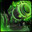
Hellfire Assault
Talents
Wild Charge, Guardian of Elune or Pulverize
Strategy
Your first priority is to make sure you know where all of the adds are going to be spawning and to help keep the Gorebound Felcaster interrupted, notably when they begin to cast Felfire Volley.
Hulking Berserkers are your main concern for this fight outside of making sure you hold aggro on everything under your jurisdiction. Due to the nature of the fight, the kill priority at any time may have the Berserker sitting at second or third priority behind Artillery or a pushed Gorebound Terror. Be aware that this is a strong possibility and be prepared to deal with four or more stacks of Slam if your raid has more important things to deal with. You’ll want to start using light cooldowns at around three stacks of Slam and heavier cooldowns and externals if you go above four stacks. If things are getting desperate and you don’t think you can handle face tanking the Berserker anymore, you can kite it a little bit to give your healer time to catch up.
The end of this fight is undoubtedly the most difficult part. Both groups will likely start to fall behind on adds, especially if it’s your first kill. It is very likely that one or both sides will end up with two Berserkers up at a time, which is a very swift tank death since you’ll already have several stacks of slam from the first Berserker. If you do get two Berserkers, be prepared to use any movement increase, Wild Charge, and even Skull Bash to put as much distance between you and the Berserkers as you can. You may also wish to utilize Life Grip at this point to help you as well. Hand of Protection also removes all stacks of Slam from a player, so use it if you need it and be ready to use a cancel aura macro.
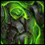
Iron Reaver
Talents
Displacer Beast, Pulverize or Bristling Fur (not recommended)
Glyphs
Glyph of Survival Instincts
Strategy
It’s important that you and your co-tank know exactly where each other is when Artillery is going out to ensure that each of you has enough time to get some distance between you and the raid. The Artillery debuffs overlap with each other quite closely at times so it’s crucial that you’re paying close attention.
Here is my suggestion of Displacer Beast usage for Artillery, whether you are tanking first or second:
If you are tanking the boss first, in order of every Artillery debuff you receive…
- Manually run out, Displacer Beast back in.
- Manually run out, manually run back in (the boss is busy casting Blitz).
- Displacer Beast out, manually run back in (use Skull Bash if you’d like to get back quicker).
- Displacer Beast out or manually run out, it doesn’t matter.
If you are tanking the boss second, in order of every Artillery debuff you receive…
- Displacer Beast out, manually run back in (use Skull Bash if you’d like to get back quicker).
- Manually run out, Displacer Beast back in.
- Manually run out, Displacer Beast back in.
In her Full Charge airborne phase, it’s the sole responsibility of you and your co-tank to seek out and soak the Reactive Firebombs. As I previously mentioned, you jump on them via right clicking as if to get into a vehicle. The bomb will then explode and throw you a moderate distance into the air. The damage is physical and there is no falling damage. Additionally, Primal Tenacity does absorb the damage from them, so that’s an added bonus. You shouldn’t need to cooldown any of the explosions, especially since you’ll be splitting the bombs with your co-tank. Use Displacer Beast to come down from the air quicker and Skull Bash as a ghetto charge to reach the bombs faster.
If Artillery is hurting more than you’d like with Pulverize, you can switch to Bristling Fur without too much trouble for this fight; however, I strongly suggest glyphing Survival Instincts instead.
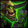
Kormrok
Talents
Wild Charge or Displacer Beast, Pulverize
Strategy
The tank swap mechanics are based on Kormrok’s usage of Swat, Foul Crush, and Explosive Burst. A taunt swap will follow after each ability is cast. Use cooldowns for any one of these abilities to help mitigate the damage as they shouldn’t be needed for any other part of the fight.
For Swat, make sure you know what’s behind you because he will swat you right through Fel Outpouring pools and you do not want to be stunned in one when you land or you will likely die, especially with the Fel Touch debuff. Likewise, make sure you don’t charge through any pools either. It’s my recommendation that during the purple pool phase, while the swirls for the stuff on the ground are spawning, that you and your co-tank soak swirls in a line such that you make a clear path in the direction that you plan to be Swatted. This reduces the damage on your run back to the boss after taking Swat.
For Foul Crush, make sure you taunt off of your co-tank (and vice versa) upon your co-tank being grabbed. Foul Crush is the highest tank damaging mechanic in the encounter and can be reduced via Savage Defense, defensive cooldowns, and mastery procs as Primal Tenacity does absorb the damage from it.
For Explosive Burst, make sure to taunt the boss and get him 40 yards away from your co-tank as quickly as possible.
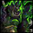
Hellfire High Council
Talents
Guardian of Elune or Pulverize (recommended)
Strategy
Tanking Dia
Make sure to save two charges of Savage Defense for her Nightmare Visage phase, otherwise, interrupt her as you will and make sure to heal yourself with Frenzied Regeneration when she’s in her normal caster phase as there’s nothing to dodge unless you’ve interrupted her.
As you will likely be taking stacks of Bloodboil constantly, it’s advised to have at least one paladin in the raid with Clemency so that you can reset your stacks a couple of times throughout the fight. The more HoPs available the better, obviously, but even just one paladin with Clemency makes a huge difference. When you do call for HoP, make sure that you’ve reached your maximum 10 stack of Bloodboil so that you’re not wasting it and make sure that you do not call for HoP during Nightmare Visage. Her movement speed during Nightmare Visage is extremely fast. If Nightmare Visage is coming and you want to drop your stacks, use cooldowns and call for externals to get through the Visage and call for HoP after she’s done unless you are comfortable with cancelling the aura very fast.
Tanking Gurtogg and Jubei’thos
If you have taken Pulverize and are using the normal six second Savage Defense, you want to aim to save at least one charge of SD for the last six seconds before he begins Fel Rage. This can generally be seen via timers, but sometimes there is no timer for Fel Rage (with Big Wigs, at any rate) and you will simply have to learn to anticipate when Fel Rage is due. This will take time and practice, but you will learn the timings of abilities based on the other bosses’ abilities as well.
Having SD rolling for the last six seconds before Fel Rage is cast allows you to have a potential six seconds of no new Acidic Wound applications, which would have you entering the Fel Rage cast with about 24s of Acidic Wound left on you. If this is the case, then your stacks will fall and you no longer have to worry about managing your charges of SD during Fel Rage (i.e. ensuring you have at least one charge available when he comes out of Fel Rage). If you are unable to dodge the last few applications of the DoT before Fel Rage, then you will want to make sure you are able to save, at minimum, one charge of SD for the end of his Fel Rage cast (keep in mind, Jubei’thos will still be meleeing you throughout Fel Rage, so make sure you’re tossing any T&C procs on him, but don’t accidentally use up all your rage so that you can’t SD at the end of Fel Rage). At the end of Gurtogg’s Fel Rage, or perhaps just a split second before the end, use any charges of SD that you have saved up. There is about a 4-5 second window where you will still have your old stacks of Acidic Wound and you will need to dodge new applications after Fel Rage.
It’s in RNG’s hands at this point; however, making sure that you actively try to dodge new stack applications both before and after Fel Rage will ensure the best possible chance at dropping your stacks. More often than not, this method will work to drop your stacks for every Fel Rage. If it doesn’t work, then simply start rolling some cooldowns when your stacks start getting high and don’t panic about the damage from the DoT. Instead, focus on the next Fel Rage coming up and make sure that you remember to manage your SD charges so that you can drop your stacks at the next Fel Rage. Missing one chance to drop your stacks is really not the end of the world. Missing two chances can start getting painful though, especially if you’re dealing with Mark of the Necromancer as well.
If you have taken Guardian of Elune, clearing your stacks of Acidic Wound is relatively easy. As with Pulverize, try to save both charges of SD for the last six seconds before Fel Rage (since two charges will still only net you six seconds of dodge). If you are able to do this, your stacks will drop without issue after Fel Rage. If you aren’t able to get the timing right before Fel Rage, make sure you have both charges of SD again for the end of his Fel Rage cast (again, both charges giving you a six second window) and use them both as soon as his Fel Rage cast is over. This should drop your DoT.
If you have Mark of the Necromancer and Reap is going out, make sure you drop it along the wall or somewhere else equally out of the way.
Kilrogg Deadeye
Talents
Guardian of Elune or Pulverize, Ursol’s Vortex
Strategy
If tanking Kilrogg, make sure you have a charge of Savage Defense available for each cast of Shred Armor to avoid the need for a tank swap.
When tanking the Hulking Terror, make sure to save charges of Savage Defense for when he uses Savage Strikes, as successfully dodging his melee attacks will not cause you to gain Fel Corruption. When the Terror reaches low health (~20-25% depending on your raid’s DPS), move him approximately 20 yards out from the group so he can drop his fel pool before moving back in to the boss. If you tank the first Hulking Terror, you will need to swap with your co-tank and have him take the second terror as the first healer with Cleansing Aura will likely not have returned yet. Once the second Terror is dead, you should be able to take every Terror until the end of the fight without issue.
Ursol’s Vortex is useful for slowing adds and keeping them close to melee for cleaving purposes.
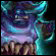
Gorefiend
Talents
Pulverize, Ursol’s Vortex
Strategy
When inside Gorefiend, make sure to tank the Enraged Spirit until it hits 70% and make sure to run out from in front of it when it begins casting Fel Fury. Call to be broken out of the stomach at around ~75%, or as per your own judgement based on the rate of DPS on the add, or after he casts Slam. Use any free time you have to damage any Constructs and throw down Ursol’s Vortex to slow them.
The Gorebound Spirit’s Fel Flames debuff can not be dodged and will still apply even if you dodge a melee attack. Swap the spirit with your co-tank when stacks get too high to manage (~6-8). Moderate cooldowns may be needed around 8 stacks or higher.
During Feast of Souls, make sure to intercept the Unstable Souls travelling toward Gorefiend once the rest of your raid has cleared their Corrupted Soul debuffs, using cooldowns if needed.
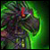
Shadow-Lord Iskar
Talents
Wild Charge, Pulverize
Strategy
Run out to your designated position upon Iskar’s tank swap mechanic, Fel Chakram. Make sure to know when you have been given the Eye of Anzu and use the following mouseover macro to pass the orb to the appropriate target as quickly as possible:
/target [@mouseover, exists]
/click ExtraActionButton1
/targetlasttarget
There is a new add that needs to be picked up (Phantasmal Radiance) and is present in every add phase. Mechanically, this add means nothing to you as a tank. Just pick it up and help kill it. Your raid may set up using Bloodlust or Heroism for these add phases, so plan your Berserk accordingly.
If you are tanking the Fel Raven, you should be the primary holder of the eye to help with the Phantasmal Corruption debuff, tossing it to healers when they need to dispel bombs. If you are unable to have the eye for some reason and you do get Phantasmal Corruption, use your strongest cooldowns and do not be afraid to call for externals because the damage from it really hurts.
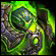
Socrethar the Eternal
Talents
Feline Swiftness, Pulverize
Strategy
Make sure you are tanking Socrethar when he’s in his construct facing away from the raid and that the designated soakers know where you are and when it’s time for them to soak Reverberating Blow with you. Swap with your co-tank at ~2 stacks and use a cooldown for the second stack to keep damage smooth.
If you are not going inside the construct during the second phase: Pick up Socrethar and all of the adds and help keep them interrupted.
If you are controlling the construct:
- Ability usage is dependent on your raid’s strategy. You want to spend as much time as possible meleeing Socrethar as you will be the highest source of damage against him at this point.
- Make sure to aim all of your Reverberating Blows and Volatile Fel Orbs at the boss as well as the adds spawning during the phase. The fact that you are debuffing your raid team is irrelevant as you should kill the boss in this phase.
- Use Felblaze Charge on cooldown to place lines of fire from where your raid is stacked to the blue portal where the Haunting Souls spawn. There are three spawns of Haunting Souls from the blue portal before it changes position. This gives you time to lay down four lines of Felblaze for each portal, side by side, to make a wide snaring area. It’s important to not lay down any more than four or your cooldown will not be up again in time for the next spawn of Haunting Souls from the new portal.
- Fel Prison should be used on the Voracious Soulstalkers to keep them imprisoned for the entirety of the fight.
- Apocalyptic Felburst can be used on the Dominators as soon as they spawn to knock off a good ~1.5mil health. Just make sure that none of your melee stand in the impact point or they will die.
*Special note: You retain any movement enhancements while you are in the construct, much like the Amber Shaper Construct from Heart of Fear, which makes Feline Swiftness + cat form the most optimal choice to allow you to come back from laying your Felblaze trail faster.
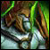
Fel Lord Zakuun
Talents
Wild Charge, Guardian of Elune or Pulverize
Strategy
Swap with your co-tank upon Soul Cleave (he will automatically switch to the next highest threat target after using it). When Zakuun is disarmed, make sure to use cooldowns, externals, and as much active mitigation as possible as damage is extremely heavy during his disarmed phase. Always make sure that you are stacked tightly with your co-tank to avoid any of your melee taking Heavy Handed.
In the shadow realm, avoid Wake of Destruction by dodging the waves. To avoid the Ring of Destruction, jump over it when it gets near to you (like the fire flower rings from the second last boss of Everbloom). The center spawning point of each future Ring of Destruction appears on your last position in the shadow realm before you leave, which means that each tank controls from where the rings will spawn. Try to place yourself accordingly when your time in the shadow realm runs out for efficient ring placement. To help with timing, you will get two ring pulses before the phase ends, so after the second ring, use that time to put yourself somewhere convenient (and try not to come out somewhere where there is an existing Fel Crystal up top).
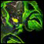
Xhul’horac
Talents
Feline Swiftness, Pulverize
Strategy
One tank will always have the boss and one will always pick up the adds (Vanguard Akkelion and Omnus). You want to avoid stepping in any fire that is the opposite of your current add-applied debuff, unless you are actively trying to clear out fire for your raid.
When Xhul’horac begins swapping between his Fel stance and Void stance, each tank will tank him during one designated stance. This means that you will tank him either only when he is Fel or only when he is Void. Xhul’horac has no taunt DR which means you will not have to worry about him becoming taunt immune. During this phase, be cautions of the fire and adds around you so as not to cause Shadowfel Annihilation.
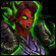
Tyrant Velhari
Talents
Feline Swiftness, Pulverize
Strategy
It’s up to your own discretion how often you and your co-tank swap the boss, but ~3 stacks is probably ideal just to keep the healing load light on your healers.

Mannoroth
Talents
Displacer Beast or Wild Charge, Pulverize
Strategy
You want to swap the Doom Lord with your co-tank every ~5-6 stacks to keep damage low and interrupt his Shadow Bolt Volley when you can.
Make sure you have active mitigation up for Glaive Combo, and make sure you pop Savage Defense before taunting the boss after he casts Massive Blast for the Glaive Thrust that follows immediately after. Use Wild Charge, Skull Bash, or Displacer Beast to get back to the boss after being knocked back.
In the final phase, use Displacer Beast exclusively to get back to the boss after Massive Blast. The blink from this talent will allow you to completely bypass the waves of Massive Blast that come out afterward. In order to not get hit by the wave when it’s your turn to take the Blast, make sure you are max melee range from the boss (on the outside of his red circle). If you’re off tanking, make sure you’re very close to him to avoid getting hit by the waves of the other tank.
Archimonde
Talents
Feline Swiftness or Displacer Beast, Pulverize
Strategy
Use a cooldown for the initial damage of Death Brand.
Interrupt Flames of Argus casts by the Felborne Overfiends when possible.
Make sure to drop your Nether Portals on the edge of the room (or away from the raid) when you are debuffed with Nether Banish. Interrupt the Touch of Shadows cast by the Shadowed Netherwalker within the Twisting Nether.
Blackrock Foundry
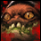
Oregorger
Talents
Displacer Beast or Feline Swiftness, Bristling Fur or Pulverize
Strategy
Guardians are relatively self-sufficient in cooldowning ourselves for Acid Torrent without the necessity of needing external cooldowns. This frees those externals up for your co-tank or any sticky situations that may for some reason arise otherwise.
You’ll typically be taking every other Acid Torrent (unless you tank with a Monk or possibly a Paladin) and, as such, will want to use the following cooldown rotation to ensure a minimum of 48% damage reduction or higher for each one you soak:
- Barkskin, Bristling Fur
- Survival Instincts
- Barkskin, Bristling Fur
- Survival Instincts
Additional external cooldowns will help even more if they’re available for use. If you’re tanking with a class that is better at handling 4 Acid Torrents than Guardians are (a Monk for example) you will end up doing 3 instead. In that case you will typically have Pulverize for the extra damage reduction for all of the Torrents. In this case you will need an extra external cooldown of some kind for one Torrent per set.
While not tanking, you should have enough raged pooled that you can pop both of your Savage Defense charges when you taunt. The twelve seconds covered by Savage Defense will carry you right up until the point when your co-tank taunts off of you, so you shouldn’t need the use of any additional defensive cooldowns. Unlike absorb tanks, tanking the boss before an Acid Torrent goes out does not harm or benefit us in any way, so if you’re co-tank is absorb-based, set up your taunt rotations to occur after the Acid Torrent has gone out.
Be mindful of Explosive Shards that will be placed on your melee – they may get close to where you need to stand to intercept Acid Torrents and the stun may prevent you from using the proper cooldowns. This is especially the case after a roll phase has ended if you have to reposition the boss at all. Also be wary of melee being stupid and standing on top of where you regularly tank, causing a shard to land on top of you.
Save Displacer Beast for the roll phase as a quick emergency exit in the event that you’re trapped in a lane that Oregorger has chosen to roll down and you can’t get out in time just by running. If your Displacer Beast is on cooldown, Oregorger’s roll can be dodged/blocked/parried and you can use any rage you have to pop Savage Defense and hope for a dodge (remember that you need to face him or you won’t dodge anything). At this level of gear you should be able to survive a single roll without dying. Note that if you’re confident in your own movement, there’s no harm in simply taking Feline Swiftness and running as normal.
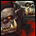
Hans’gar & Franzok
Talents
Feline Swiftness, Pulverize
Glyphs
Glyph of Survival Instincts (optional)
Strategy
The most important part of this fight is to make sure that you always have a cooldown up when Hans or Franz starts casting Crippling Suplex. Depending on your gear level, any cooldown of 30% damage reduction or higher will do if you’re topped on health; however, you should be able to use Survival Instincts for each Crippling Suplex that’s cast during the fight. You shouldn’t need to glyph Survival Instincts, but if you’re pushing the phases quickly and are afraid that your Survival Instincts charges won’t come off cooldown in time, you can glyph it for that extra assurance.
Make sure to use Barkskin or external cooldowns for when your stacks of Shattered Vertebrae begin to add up. They should never get too high (>3) unless your raid group is staying stacked closely for the duration of the fight, but it’s advisable to use a cooldown if you get any more than one stack of the debuff as the boss’ melees will begin to take dangerous amounts of health away from you. On use trinkets (like Tablet) are great for the smart-stamper phases as your healers will have to move constantly, making it more difficult to direct heals your way.
Beastlord Darmac
Talents
Feline Swiftness or Wild Charge, Pulverize or Guardian of Elune
Strategy
This fight is fairly rinse-repeat.
Make sure you and your co-tank are taunting off each other at around 3 stacks of Rend and Tear during Cruelfang’s phase until the end of the fight. Note that if you’re tanking with a highly-mobile spec (such as a Monk) it’s very likely they won’t get many stacks, and you’ll just end up DPSing adds for the entire Cruelfang phase. It’s very important that you do not accidentally get caught however.
Ironcrusher should be taunted, again, at around 2-3 stacks of Crush Armor. If Cruelfang is killed before Ironcrusher and Darmac is using Rend and Tear once he jumps off of Ironcrusher, make sure to manage your debuffs so that neither one goes above 3 stacks or else you’ll be putting yourself in a dangerous situation when picking up pack beasts.
Dreadwing should be traded for every pack beast beast spawn. This means that Tank A will pick up Dreadwing while Tank B picks up the pack beasts. Tank B will then taunt Dreadwing when he gets back into melee and hold him and the pack beasts until Tank A’s debuff falls off which is, generally, shortly before the next pack beast spawn. This means that the same tank will be picking up pack beasts for as long as Dreadwing lives. If it is your job to pick up pack beasts during this phase, don’t be afraid to make use of some light cooldowns to help you deal with the damage from Seared Flesh when you get back to Dreadwing and start tanking him. Be extra mindful of the pack beasts dying around you as Seared Flesh will cause the Flame Infusion from the pack beast corpses to do extra damage to you. Note that when tanking with a Monk they will simply taunt the pack beasts every spawn, so just worry about managing their stacks appropriately
Faultline’s damage ramps up the longer he is alive, so if you need to use any cooldowns, backload them during this phase. Make sure to stay stacked with your co-tank to help him absorb his Heavy Smash mechanic and be extra mindful if he has to leave to pick up pack beasts and vice versa.
Before picking up pack beasts, if using Pulverize, make sure to refresh it or put it up before you leave the boss so you have a full duration rolling. Otherwise, save your GoE charges and make sure to activate them only once the pack beasts become active so as not to waste any of the duration. If you’re using Wild Charge, be aware that the pack beast you charge will be dazed in place and that may make collecting them problematic.
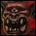
Gruul
Talents
Feline Swiftness, Pulverize
Glyphs
Glyph of Survival Instincts
Strategy
Defensive cooldown management for this fight is dependent on if you’re the tank taking 6 Inferno Slices per phase or 3. It’s also dependent on your EHP gained via Ursa Major – higher stacks of UM will cause you to need fewer or lighter cooldowns to get through the phases. Assuming low stacks of UM, you can generally follow the cooldown rotation of:
- Slice 1: Barkskin or light external
- Slice 2: Medium external (30%) (+light external optional)
- Slice 3: Survival Instincts or heavy external (Pain Suppression)
- Slice 7: Barkskin or light external
- Slice 8: Medium external (30%) (+light external optional)
- Slice 9: Survival Instincts or heavy external (Pain Suppression)
Of course, make adjustments for your particular raid comp. If you’re only taking 3 slices per phase, your cooldown rotation becomes very simple:
- Slice 1: Survival Instincts
- Slice 2: Barkskin + External + Tablet (if you have it).
- Slice 3: Survival Instincts
With Pulverize, make sure it’s up for every Inferno Slice for additional mitigation as well as when you’re tanking the boss. The reason you split the Survival Instincts charges is to get the recharge rolling as soon as possible. Otherwise you will end up with a situation where it is not available when you need it to be. Note that when you are the one taking 3 Slices (and your co-tank is taking 6), your co-tank will have to start tanking the boss coming out of Rampage. Otherwise your Overwhelming Blows stacks will not reset in time for the next Slice phase and you will be in serious danger of dying.
*Bristling Fur is an option; however, with the existence of the Glyph of Survival Instincts, this is wholly unnecessary and the benefit Pulverize provides when you’re tanking Gruul helps with the Overwhelming Blows damage. I would only suggest Bristling Fur if your raid is extremely short on external cooldowns to share between both tanks if needed.

Flamebender Ka’graz
Talents
Feline Swiftness, Heart of the Wild (optional), Pulverize
Strategy
Heart of the Wild may be used on pull for additional DPS as there are no mechanics in this fight that call for 2 tanks until approximately a minute into the fight.
If you’re tanking the Overheated Wolf, you should be able to get away without using a cooldown for the first Charring Breath, although it is safer to use a light cooldown such as Barkskin. The second breath will need something slightly heavier, preferably at 30%. The third breath should be covered by Survival Instincts, after which a different wolf will become Overheated and you and your co-tank should swap roles. Many guilds aim to have the wolves die at this point.
When the boss starts to apply Rising Flames, she should be traded every 5-6 stacks until her Flamefury buff falls off.
If your raid is simply stacking and nuking the dogs, it’s typically a good idea to save Berserk for the 2nd set of wolves. Your DPS will likely have expended a lot of their cooldowns by that point so extra damage is useful.
Operator Thogar
Talents
Feline Swiftness, Typhoon, Ursol’s Vortex, Pulverize
Strategy
You will want to taunt the boss every 2 stacks of Enkindle.
Save your Stampeding Roar for times when the raid must cross a Deforester’s Heat Blast in order to keep the stacks of Burning on the raid at a minimum.
Ursol’s Vortex can be used in conjunction with Typhoon as a way to gather the adds that spawn during the fight into a more centralized location. This can be done by placing the Vortex and then Typhooning the adds through the Vortex and out toward the edge so that the Vortex brings them all back to the middle. This is better performed by a moonkin since they are already at range, but is an effective way of gathering the adds together if you do not have a death knight’s Gorefiend’s Grasp.
Barkskin is best used when engaging in heavy movement, such as random Trains.
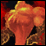
Blast Furnace
Talents
Wild Charge, Pulverize
Glyphs
Glyph of Fae Silence (optional)
Strategy
The first 2 phases of this fight are very damage and mechanic light unless you are tanking the Security Guards or Feldspar. Use medium to heavy cooldowns once you start building up several Security Guards, or light cooldowns if you are tanking Feldspar.
Glyph of Fae Silence can be useful in this fight simply as a ranged interrupt for Furnace Engineers’ Repair casts or Firecallers’ Cauterize Wounds casts. I don’t advise this simply because Faerie Fire spam is often one of the only ways to get sufficient aggro on a Furnace Engineer fresh out of mind control as they are immune to taunt at that time. While Engineers should be broken in melee range, you will find that some run out before you can get aggro on them and this is the only way to bring them back without moving the Bellows Operator out of position.
Phase 3 is where you will want to use all of your cooldowns and externals to help mitigate the damage from Heat. You will want to swap at 2 stacks of Heat and start rolling cooldowns and externals when you start getting higher stacks of Tempered. You will want to ease off on your use of Savage Defense in this phase, instead favoring Frenzied Regeneration to help deal with all the ticking fire damage from Heat, as well as the periodic casts of Blast.

Kromog
Talents
Wild Charge, Heart of the Wild (optional), Guardian of Elune
Strategy
GoE allows us to negate a lot of Kromog’s melee swings, resulting in long stretches of zero damage taken from avoidable sources. There are certain signals in the fight that can be used to indicate when to cast Savage Defense:
- Stone Breath: You want to cast SD with about ~0.5s left on his cast of Stone Breath. Any later and you won’t dodge his first melee following it. As a general rule, you can follow the first SD with a second right after the first 3s and both charges will not go to waste. However, he does sometimes decide to do another mechanic (notably Slam) instead of continuing to melee.
- Slam: You want to cast SD as soon as you’re back in melee range. Dodging this first hit is especially important because sometimes you will get back to the boss before your co-tank due to Wild Charge and take a full Fists of Stone hit as well as his normal melee which can global you after a Slam and with any Warped Armor stacks.
- Rippling Smash: Unlike the other two abilities, you actually have a small grace period after Rippling Smash. You’ll want to wait about ~1-1.5s after his arm smashes the ground to cast SD. Any earlier and you’ll only dodge the first melee, but likely not the second.
- Normal Melee Attacks: If you’re going to use a charge of SD in the middle of a round of melee attacks, your best bet is to use it about ~0.5s after the last melee hit. The damage from his melees don’t really line up with the animation of his swing – the damage hits you before it looks like he does, so you want to cast SD about 0.5s after the animation of his last swing ends to get the next 2 melee hits in.
Fill in any gaps in your GoE usage with cooldowns and trinkets to help keep the damage low until you can start dodging again.
Heart of the Wild may be used during the Rune of Trembling Earth phases; however, you can only use it for every other phase. I recommend keeping Dream of Cenarius for the Healing Touch proc.
If you miss a hand during the Rune of Grasping Earth, you can use Wild Charge or Skull Bash on someone else’s hand to avoid the falling damage. Use a cooldown for the ticking damage from Thundering Blows during the phase until you’re back within range of your healers.
Iron Maidens
Talents
Wild Charge, Pulverize or Guardian of Elune
Strategy
Marak: Make sure that you are topped before every Blood Ritual so that you can properly soak the Crystallized Blood from Blood Ritual. You will want to make sure you keep Pulverize up and use small cooldowns like Barkskin when they’re available after you’ve soaked your first Crystallized Blood since Marak’s Bloodcalling will cause it to hit almost twice as hard from that point forward.
At 100 Iron Will, you want to chain cooldowns and heavy absorbs to minimize the damage taken by the raid.
Sorka: Blade Dash is actually able to be dodged and doing so will prevent you from receiving the Sorka’s Prey debuff. Because of this, GoE is an option on this fight, if only just to completely negate the damage from Blade Dash altogether. However, if you choose not to take GoE, you can still drop Sorka’s Prey, if you don’t dodge it with normal Savage Defense, by standing in Marak’s Blood Ritual to gain the Marak’s Bloodcalling. Bloodcalling and Sorka’s Prey cannot coexist on one player, so the old debuff is always overwritten by the new one. By gaining the Bloodcalling debuff, you take much less damage since the next time you don’t dodge Blade Dash, it will be your first application of Sorka’s Prey again. Trading these debuffs will keep your damage intake low and is a perfectly acceptable alternative to GoE.
At 100 Iron Will, chain your cooldowns appropriately, accounting for whether or not your raid has decided to kill Sorka or Garan second. Her melee attacks will begin to hurt very quickly and Blade Dash will start to do heavy damage, especially with Marak dead and no Blood Ritual to reset your debuff.

Blackhand
Talents
Displacer Beast, Pulverize
Strategy
Phase 1 is fairly light damage and shouldn’t call for much more than a Barkskin or Survival Instincts in order to soak Shattering Smash. Be conscious of your positioning in addition to the ranged group’s position so that you don’t trap yourself in the path of their Impaling Throws.
Guardians are fairly suited for tanking the siegemakers in phase two because our mastery works against their Battering Ram. If you are tanking the siegemakers, always make sure that your back is perpendicular to the wall and right against it so that you don’t travel anywhere. As long as it is just the siegemaker on you, completely forego Savage Defense and only use Frenzied Regeneration since Battering Ram cannot be dodged, blocked, or parried. Make sure to pool up enough rage for every Shattering Smash on your co-tank to pop SD when the boss runs to you. You should only have to tank both the boss and the siegemaker for the span of one charge of SD before your co-tank is able to taunt off of you. Use Displacer Beast to blink away from the siegemakers (#1) when you need to quickly pick up the next siegemaker (#2) or you need to get to the boss before a Shattering Smash (#4) so that he doesn’t move and spawn the wrong siegemaker. Once the first two siegemakers are dead, no more will be killed and you will be tanking the next 1-2 until the end of the phase.
*Note: The third siegemaker will likely live long enough to get to the point where it casts Mortar so often that it no longer has time to hit you with Battering Ram. At this point, you have no choice but to stay where you are and wait for the next siegemakers to either be brought to you and refixated, or wait until the next one you are near spawns.
In phase 3, you’ll want to swap every other Shattering Smash with your co-tank. This lines up perfectly for your Displacer Beast cooldown, which you can use right after being smashed to blink to the next boss tanking position in the kite path along the edge of the platform. Otherwise, use cooldowns at your discretion. Nothing in this phase is overly dangerous unless one of the Shattering Smash soakers dies, in which case you’ll want to start cooldowning Smash to help mitigate some of the extra damage.
AddOns
Weak Auras are your best friend. I’ve included that I use below.
- Resolve Bar
- Mangle Cooldown
- Mangle Proc
- Dream of Cenarius Proc
- Survival Instincts
- Survival Instincts Cooldown
- Barkskin
- Barkskin Cooldown
- Berserk
- Berserk Cooldown
- Cenarion Ward
- Cenarion Ward Cooldown
Addons
There are a few addons you’ll find useful. Or at least, some kinds of addons.
- A nameplate addon like Tidy Plates.
- A buff timer addon like Droodfocus. Also works for debuff timers and tracking Savage Defense charges.
- A standard boss timer.